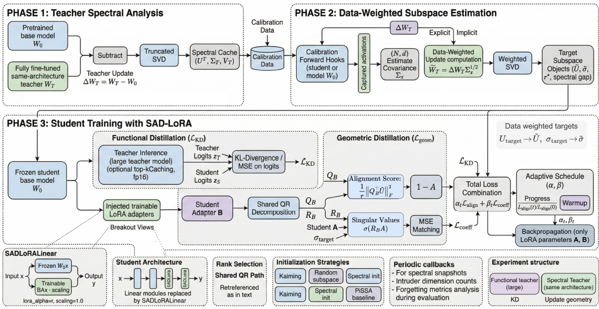

Distilling a fine-tuned teacher into a LoRA-adapted student is a standard recipe for parameter-efficient compression, but output-level KD does not explicitly control which rank-r weight subspace the adapter occupies. We propose SAD-LoRA (Spectral Alignment Distillation), which selects this subspace from the data-weighted student-space reference update and maintains it during training via a differentiable principal-angle loss on the adapter's column space. We show that the data-weighted distillation error decomposes exactly into subspace misalignment, within-subspace coefficient mismatch, and irreducible rank residual; standard KD can affect the first term only indirectly through output gradients. On controlled synthetic problems with a flat teacher spectrum, SAD-LoRA reduces the subspace-misalignment term from 51% to nearly zero and lifts final subspace alignment from 0.49 to 1.00. On RoBERTa-large → RoBERTa-base distillation across six GLUE tasks, SAD-LoRA improves rank efficiency: at r=4, it matches or beats the strongest spectral baseline on five of six tasks, and at r=8 it gives the best result on SST-2 and CoLA. Ablations identify subspace alignment as the load-bearing component, while coefficient matching is auxiliary.
Exact Error Decomposition. We prove that the data-weighted LoRA distillation error decomposes exactly into subspace misalignment, within-subspace coefficient mismatch, and an irreducible rank residual bounded by the Eckart–Young–Mirsky theorem — isolating a failure mode invisible to output-level KD.
SAD-LoRA. A training-time principal-angle alignment loss that keeps the LoRA adapter's column space locked to a frozen, data-weighted teacher-update subspace computed offline via implicit SVD over calibration activations, preventing subspace drift under task and KD gradients.
Rank-Efficiency Gains on GLUE. Across RoBERTa-large → RoBERTa-base distillation on six GLUE tasks, SAD-LoRA and its variants match or beat spectral-init baselines (NN-Init, PiSSA-Init) at low rank, with the largest gains on STS-B and CoLA — and ablations confirm subspace alignment, not coefficient matching, carries the load.

Fig. 1: Overview of SAD-LoRA. Phase 1 — Teacher Spectral Analysis: the teacher update ΔWT = WT − W0 is truncated via SVD offline into a spectral cache (UT, ΣT, VT). Phase 2 — Data-Weighted Subspace Estimation: calibration activations are captured to estimate the input covariance Σx, giving the data-weighted update and target subspace objects (Ũ, σ̃, r*). Phase 3 — Student Training: the frozen student base model is augmented with trainable LoRA adapters (A, B); functional distillation (KD loss on teacher/student logits) is combined with geometric distillation — a principal-angle alignment loss between the adapter's column space and the target subspace, plus a singular-value coefficient-matching loss — under an adaptive warmup schedule, with gradients backpropagated only into the LoRA parameters A and B.
| Method | SST-2 | MRPC | STS-B | CoLA | QNLI | RTE |
|---|---|---|---|---|---|---|
| KD-LoRA | 93.3 ± 0.4 | 87.8 ± 0.9 | 0.789 ± 0.033 | 0.426 ± 0.013 | 91.3 ± 0.2 | 65.0 ± 1.6 |
| Logit-MSE | 93.8 ± 0.2 | 87.2 ± 0.2 | 0.789 ± 0.033 | 0.423 ± 0.013 | 90.8 ± 0.6 | 59.0 ± 3.7 |
| NN-Init | 93.4 ± 0.4 | 90.3 ± 0.6 | 0.887 ± 0.003 | 0.555 ± 0.008 | 92.5 ± 0.1 | 69.2 ± 1.0 |
| PiSSA-Init | 93.7 ± 0.8 | 90.2 ± 0.6 | 0.880 ± 0.004 | 0.519 ± 0.015 | 92.1 ± 0.1 | 66.1 ± 1.2 |
| SAD-LoRA | 94.3 ± 0.2 | 89.9 ± 0.3 | 0.884 ± 0.002 | 0.558 ± 0.006 | 92.1 ± 0.0 | 69.9 ± 1.3 |
| SAD-LoRA-Align | 94.1 ± 0.1 | 90.1 ± 0.2 | 0.887 ± 0.003 | 0.553 ± 0.003 | 92.5 ± 0.1 | 70.0 ± 1.3 |
| SAD-LoRA-Coeff | 94.5 ± 0.1 | 90.0 ± 0.4 | 0.885 ± 0.002 | 0.539 ± 0.009 | 92.2 ± 0.0 | 63.1 ± 6.8 |
| Method | SST-2 | MRPC | STS-B | CoLA | QNLI | RTE |
|---|---|---|---|---|---|---|
| KD-LoRA | 93.7 ± 0.2 | 90.2 ± 0.7 | 0.847 ± 0.018 | 0.478 ± 0.016 | 92.0 ± 0.2 | 67.4 ± 1.1 |
| Logit-MSE | 93.5 ± 0.2 | 89.8 ± 0.2 | 0.847 ± 0.018 | 0.473 ± 0.019 | 91.9 ± 0.3 | 65.2 ± 2.8 |
| NN-Init | 93.8 ± 0.1 | 90.2 ± 0.9 | 0.892 ± 0.004 | 0.554 ± 0.005 | 92.8 ± 0.2 | 72.1 ± 1.4 |
| PiSSA-Init | 94.0 ± 0.5 | 91.1 ± 0.6 | 0.887 ± 0.006 | 0.538 ± 0.015 | 92.3 ± 0.1 | 68.8 ± 2.1 |
| SAD-LoRA | 94.5 ± 0.2 | 90.9 ± 0.4 | 0.891 ± 0.003 | 0.558 ± 0.005 | 92.5 ± 0.1 | 71.8 ± 0.8 |
| SAD-LoRA-Align | 93.6 ± 0.2 | 90.1 ± 0.3 | 0.893 ± 0.003 | 0.562 ± 0.006 | 92.8 ± 0.1 | 72.2 ± 0.6 |
| SAD-LoRA-Coeff | 93.7 ± 0.2 | 90.5 ± 0.2 | 0.891 ± 0.003 | 0.537 ± 0.005 | 92.5 ± 0.1 | 68.0 ± 0.6 |
| Task | r = 1 | r = 2 | r = 4 | r = 8 | r = 16 |
|---|---|---|---|---|---|
| RTE | 1.00 | 1.00 | 0.99 | 0.99 | 0.99 |
| MRPC | 0.87 | 0.90 | 0.94 | 0.96 | 0.97 |
| CoLA | 0.82 | 0.90 | 0.93 | 0.95 | 0.97 |
| SST-2 | 0.75 | 0.84 | 0.88 | 0.91 | 0.94 |
| QNLI | 0.69 | 0.78 | 0.84 | 0.88 | 0.90 |
| STS-B | 0.68 | 0.82 | 0.90 | 0.94 | 0.96 |
Subspace alignment is load-bearing: removing the alignment loss (SAD-LoRA-Coeff) is far more damaging than removing coefficient matching (SAD-LoRA-Align). At r = 8, dropping alignment costs 0.025 MCC on CoLA (0.562 → 0.537) and 4.2 accuracy points on RTE (72.2 → 68.0), with noticeably higher variance on small-data tasks (± 6.8 on RTE at r = 4). Coefficient matching is auxiliary — removing it improves or matches the full objective on STS-B, CoLA, QNLI, and RTE, while the full objective remains stronger on SST-2 and MRPC. MRPC is the one consistent exception across the study, where PiSSA-Init's pretrained-weight principal structure remains a stronger inductive bias than the data-weighted teacher update.
@inproceedings{tariq2026sadlora,
title = {SAD-LoRA: Spectral Alignment for Low-Rank
Knowledge Distillation},
author = {Tariq, Omer and Raza, Syed Muhammad and Son, Jeongbae},
booktitle = {ICML 2026 ColorAI Workshop},
year = {2026},
volume = {306},
organization = {PMLR}
}